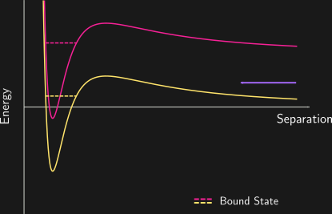

Pendula of Atomic Collisions
Kjærgaard Lab
Physics, University of Otago
We see the same thing in collisions.

Shape Resonance in energy
Feshbach resonances in magnetic field

We have both

\[ \require{color} \definecolor{PSorange}{rgb}{0.953, 0.565, 0.494} \definecolor{PSpurple}{rgb}{0.635, 0.404, 0.961} \definecolor{PSpink}{rgb}{0.965, 0.129, 0.588} \definecolor{PSblue}{rgb}{0.094, 0.753, 0.769} {\color{PSblue}{\sigma(B, E)}} = \frac{2\pi\hbar}{mE}\sin^2\left( {\color{PSpurple}{\delta_\text{bg}(E)}} + \tan^{-1}\left[\frac{{\color{PSorange}{\Gamma(E)}} / 2}{B - {\color{PSpink}{B_\text{res}(E)}}}\right] \right)\]

Phase Winding

Phase Winding = Shape change

Phase Winding = Shape change
The resonance broadens

The resonance broadens
The resonance shifts
The resonance shifts

Quantum Defect Theory
\[ \begin{pmatrix} f \\ g \end{pmatrix} = \begin{pmatrix} C^{-1} & 0 \\ C \tan \lambda & C \end{pmatrix} \begin{pmatrix} \hat{f} \\ \hat{g} \end{pmatrix} \]
QDT parameters
\[ \begin{pmatrix} f \\ g \end{pmatrix} = \begin{pmatrix} {\color{PSpink}C}^{-1} & 0 \\ {\color{PSpink}C} {\color{PSblue}\tan \lambda} & C \end{pmatrix} \begin{pmatrix} \hat{f} \\ \hat{g} \end{pmatrix} \]

Pendulum Amplitude is Wavefunction Amplitude
(at short-range)
\[ \Gamma(E) = C^{-2}(E) \bar{\Gamma}_B \]
\[ B_\text{res}(E) = B_0 + \frac{E}{\delta\mu} - \frac{\bar{\Gamma}_B}{2} \tan\lambda \]
Shift is related to the first pendulum width

\[\tan\lambda \sim \frac{\omega_1^2 - \omega^2}{\left|\omega_1^2 + 2i\gamma_1\omega - \omega^2\right|^2}\]